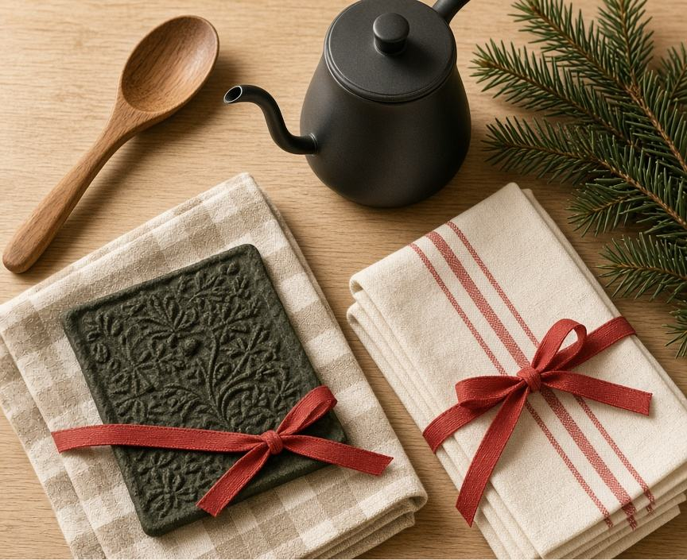

Kitchen Stocking Stuffers Under $25

This guide contains affiliate links. If you buy something through one of them, we may earn a small commission at no extra cost to you. As an Amazon Associate I earn from qualifying purchases. Full disclosure here.
These are fit-for-purpose picks, not a hands-on test. We have not cooked with every item on this page. Prices move — check the current price before you count on a $25 stocking.
- OXO Good Grips swivel peelerThe dull peeler is the one people actually replace. Soft grip, swivel blade, a hole so it can hang.See it on Amazon
- TempPro TempSwift instant-read thermometerA folding thermometer for the roast you would otherwise guess at. Backlit, and it can live on the fridge.See it on Amazon
- Mr. Coffee Flintshire whistling kettle, 1.75 quartThe everyday boil for a French press or tea. Not a gooseneck — pour-over wants the kettle on the coffee guide.See it on Amazon
A stocking is a bad place for a stand mixer and a good place for the tool someone reaches for on a Tuesday. This list stays in the lanes the rest of the site already cares about: a skillet, a knife, coffee, and the drawers and cupboards around them. Eight picks. Each one is small.
Every product below was a live Amazon listing when this page was published in November 2026, and each one was listed under $25 that day. That is not a promise about tomorrow. A few sit close to the line — the shears, the chainmail pad, and the kettle especially. If one has drifted over, skip it.
For the cooking
OXO Good Grips swivel peeler
The peeler in most drawers is dull, and a dull peeler is how a carrot loses its shoulders. This one has a soft grip, a swiveling blade, and a hole in the handle so it can hang instead of disappearing under the spatulas. It is the least glamorous gift here and the one most likely to get used this week.
TempPro TempSwift instant-read thermometer
Guessing is how a holiday roast goes dry. A folding instant-read thermometer is the small tool that replaces the guess. This TempPro model is the compact one: a backlit screen, a probe that folds away, and a magnet so it can live on the fridge between meals. We are not reporting a test of its speed or accuracy. The reason it is here is the form — pocketable, readable, and easy to put back — which is what makes a thermometer actually get used.
OXO Good Grips spring-loaded poultry shears
Shears are how you break down a chicken without asking the chef's knife to cut bone. These are spring-loaded, with a lock for the drawer and blades that come apart for washing. They do not replace the knife in our chef's knife guide. They keep that knife off the joint.
For the baking, and the pan
OXO Good Grips 2-piece silicone spatula set
A jar spatula and a smaller saucepan spatula. Flexible edges for getting batter out of a bowl and sauce out of a pan, in silicone rather than metal, which matters if the cook also owns the nonstick pan from the skillet guide. Two sizes, because one spatula is never the right length for both a jar and a pot of gravy.
OXO Good Grips multi-purpose scraper and chopper
A bench scraper earns its keep the week someone bakes: dividing dough, lifting a chopped onion off the board, scraping the counter. This one is stainless steel, with a soft grip and inch marks on the blade. If the gift is for a baker who is still deciding on a mixer, the mixer guide is the longer conversation. The scraper fits in the stocking either way.
Lodge chainmail scrubbing pad
Cast iron stays pleasant only if someone actually cleans it. The ritual in the skillet guide is short: rinse it warm, dry it on the burner, wipe on a drop of oil. A chainmail pad is the tool for the stuck-on bit, with a silicone grip in the middle. Lodge makes this one for its own pans. It is the pick most likely to bump the top of a $25 stocking, so look at the price before you commit.
For the cupboard, and the kettle
OXO Good Grips magnetic clips, set of four
Open bags are how a tidy pantry falls apart: the flour, the coffee, the frozen peas. Four magnetic clips close a bag and then stick to the fridge, which is where a clip has to live or it vanishes. They are not a pantry system. For that, start with pantry organization that lasts. Clips are the stocking-sized piece of it.
Mr. Coffee Flintshire 1.75-quart whistling kettle
The coffee guide says any kettle works for a French press, and a gooseneck is what pour-over wants. This is the first of those: a brushed stainless whistling kettle for the stove, 1.75 quarts, for boiling water. It is not a gooseneck, and it will not give you a slow pour onto a dripper. If that is the brew method, use the Hario kettle on the coffee guide, and expect it to sit above a stocking budget. This one is the everyday boil.
Bottom line
Give the tool they will use on a normal Tuesday, and check the price the morning you buy. If you want the longer version of the skillet, the knife, or the coffee setup, send one of the guides below with the gift.